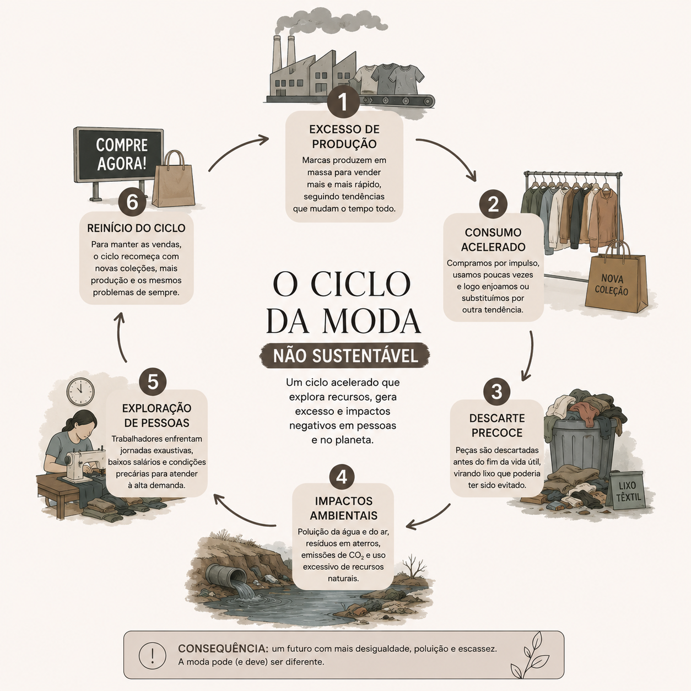
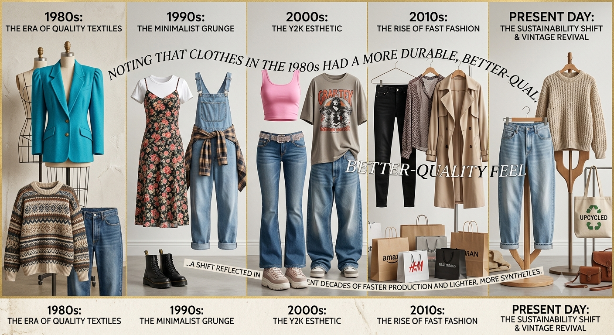

Todo o mundo da moda e da estética é extremamente presente no nosso cotidiano, mesmo que você não perceba. Ele está no protetor solar que você passa no rosto, na lã da blusa que você usa no frio até no design da sua cozinha por exemplo.
Você já parou para pensar em como o mundo da estética afeta o meio ambiente?- A indústria da moda e da beleza tem um grande impacto no meio ambiente. A produção de roupas utiliza grandes quantidades de água, energia e matérias-primas, além de gerar poluição por meio de produtos químicos usados no tingimento dos tecidos. Já a fabricação de cosméticos e embalagens pode contribuir para o aumento de resíduos plásticos e para a contaminação do solo e da água quando descartados de forma inadequada.utro problema é o consumo excessivo incentivado pelas tendências que mudam rapidamente. Muitas roupas são usadas poucas vezes antes de serem descartadas, aumentando a quantidade de lixo produzido. Além disso, o transporte de produtos entre diferentes países gera emissões de gases que contribuem para o aquecimento global.

A moda ao longo das década!
Anos 1980
As roupas eram produzidas para durar muitos anos. Os tecidos eram mais grossos, as costuras mais resistentes e era comum consertar uma peça em vez de comprar outra.
A fabricação ainda era majoritariamente local ou regional em comparação com os dias de hoje. O foco estava na durabilidade e em ombreiras estruturadas, tecidos sintéticos (como o nylon e o neon) e muito jeans de lavagem ácida.
Anos 1990
A produção começou a aumentar e a moda ficou mais acessível. Ainda existiam peças de boa qualidade, mas as tendências começaram a mudar com mais frequência.
Foi o boom da deslocalização industrial. Grandes marcas começaram a transferir suas fábricas para países em desenvolvimento (especialmente na Ásia) para reduzir custos de mão de obra.
Anos 2000
Com o crescimento da produção em massa, muitas roupas passaram a ser feitas com materiais mais baratos. A durabilidade começou a diminuir.
Esta década mudou tudo. Marcas como Zara, H&M e Forever 21 revolucionaram a indústria com o Fast Fashion (moda rápida). O ciclo de produção, que antes levava meses, passou a levar semanas.
Anos 2010 até hoje
- Anos 2010 até hoje
A chamada fast fashion acelerou ainda mais esse processo. Novas coleções chegam às lojas em poucas semanas, incentivando as pessoas a comprar cada vez mais, mesmo sem necessidade.
A internet e as redes sociais (como o Instagram) ditaram o ritmo. A produção se tornou ainda mais digitalizada, com sistemas de dados prevendo exatamente o que as pessoas queriam comprar com base em curtidas e influenciadores.
Por que as roupas parecem durar menos?
Muitas empresas produzem roupas com materiais mais baratos para reduzir custos e acompanhar a velocidade das tendências. Isso não significa que todas as marcas façam isso, mas a produção acelerada da fast fashion costuma resultar em peças com menor durabilidade, fazendo com que o consumidor compre novamente em menos tempo.
Antigamente, as marcas produziam roupas para durar anos. Hoje, o modelo de negócios de grandes marcas (como as gigantes do varejo online) é baseado na rotatividade. Elas precisam que você compre roupas novas constantemente. Se uma blusa durar dez anos, você demora dez anos para comprar outra. Se ela estragar em alguns meses, você volta para comprar mais.
